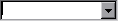
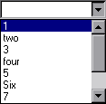
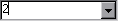

(list = false, width = 10, mandatory = false, allowOther = false,
set = false, selectFirst = false, listField = false, splitValue = ',',
listSeparator = ' - ', status = '', otherListOptions = #(), font = "",
trim = true, size = "", bgndcolor = "", textcolor = "")
This is a single-line edit field with an arrow button on the right side. After an item has been selected from the drop-down list, the edit field will be filled in with the value chosen. The value can also be typed directly into the field. If you haven't specified allowOther (see below) then you only have to enter enough of a prefix of a value to uniquely identify it.
The list to be selected from can be specified using an object for the list parameter, or a listField can be specified (see below).
For example:
ChooseListControl(#(1, 'two', 3, 'four', 5, 'Six', 7, 'Eight', 9, 'Zero'))
Would display:
And when you clicked on the button, you would get:
If the list contains items that consist of a value, a " - ", and a description, only the value (the part before the " - ") will be displayed when one is selected from the list.
For example:
ChooseListControl(list: #('1 - one', '2 - two', '3 - three', '4 - four'))
Would display a selected value like this:
listField can be used to specify that the list should be taken from another field. Normally this will be a rule rather than an actual field. For example, to get the list from the "arcus_numlist" field you'd specify:
ChooseListControl(listField: 'arcus_numlist')
and then specify a rule for this field like:
Rule_arcus_numlist
function ()
{
return "1, two, 3, four, 5, Six, 7, Eight, 9, Zero"
}
The list can be returned as a list object or as comma separated string.
Note: listField will only work if the ChooseList is inside a Controller that will respond to a GetField message. Normally this will be a RecordControl. AccessControl automatically uses a RecordControl.
The width parameter is used to specify the width of the field.
If the mandatory parameter is true, the field can not be left empty by the user.
If the allowOther parameter is true, the user may type in a value that does not exist in the list, otherwise, values that do not exist in the list are considered invalid.
The set parameter may be used to set an initial value.
If the selectFirst parameter is true, the field will initially be set to the first value in the list.
Note: This Control can be used as an alternative to ComboBoxControl.